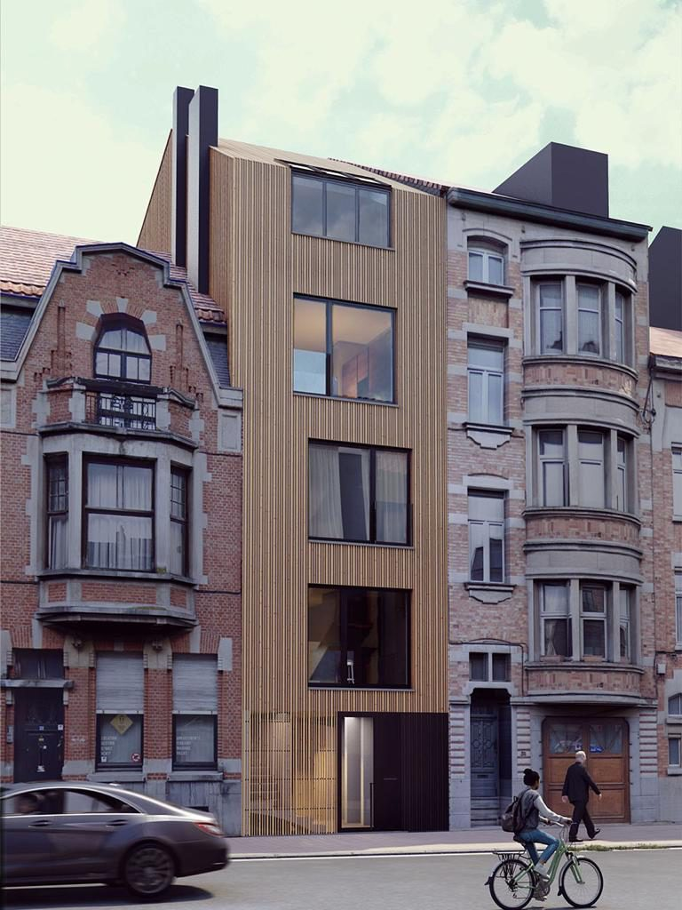
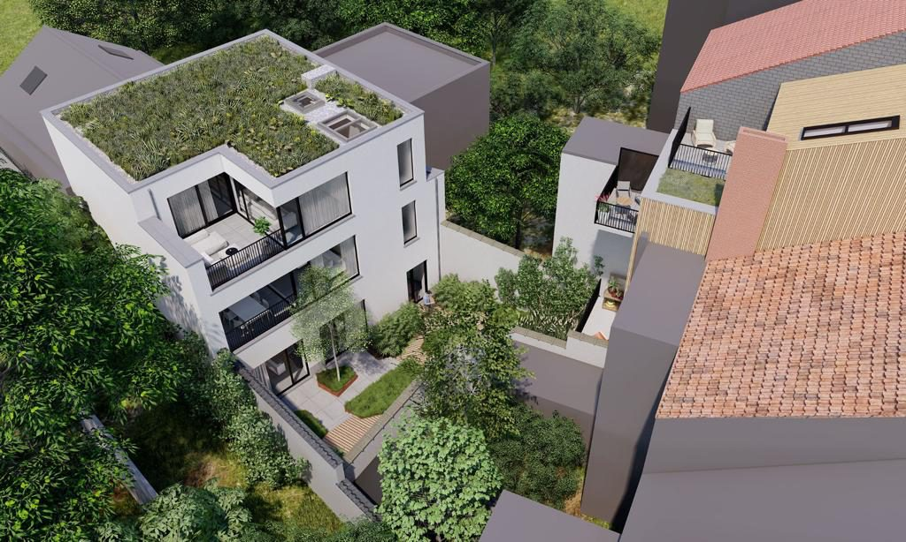
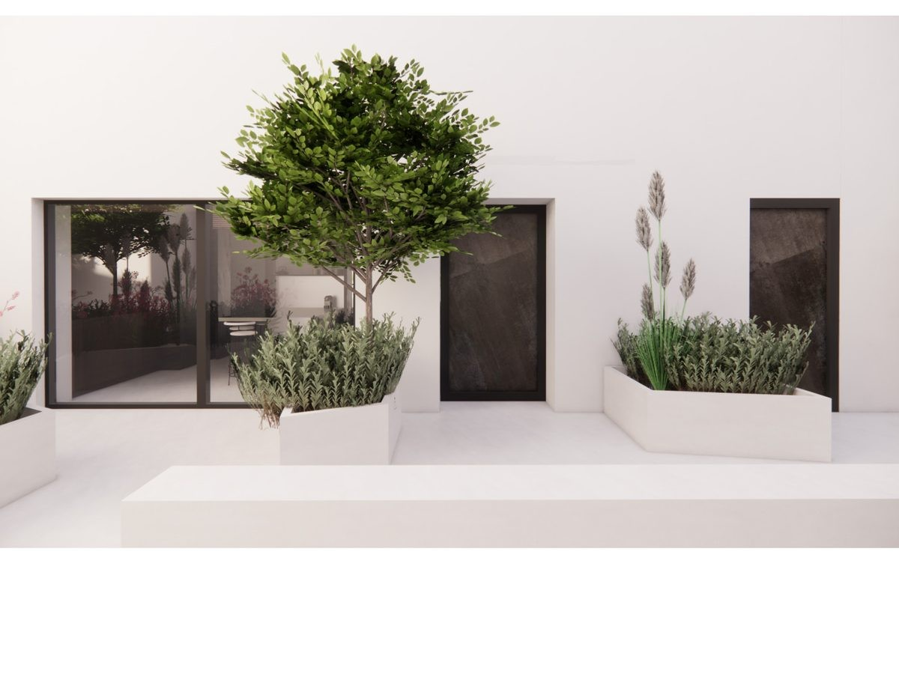
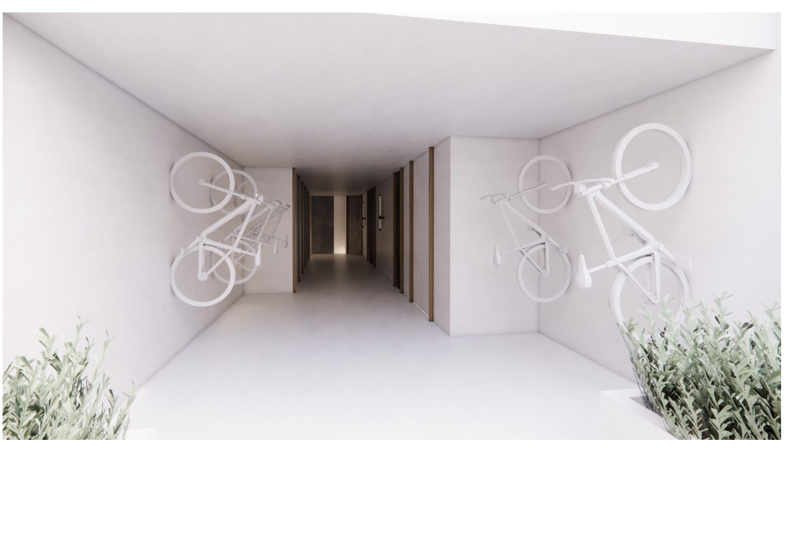
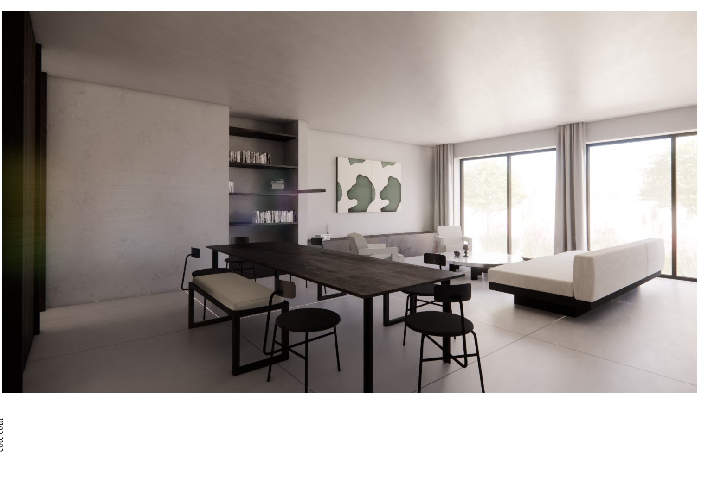
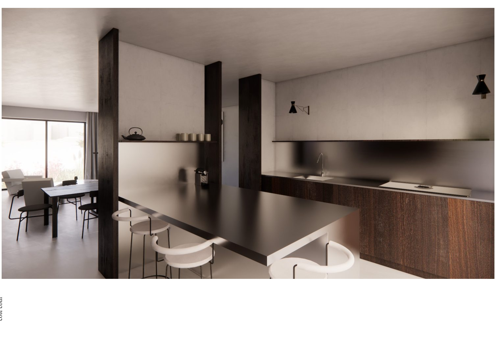
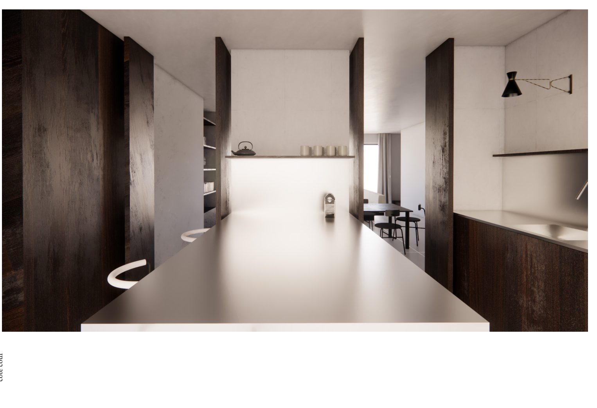
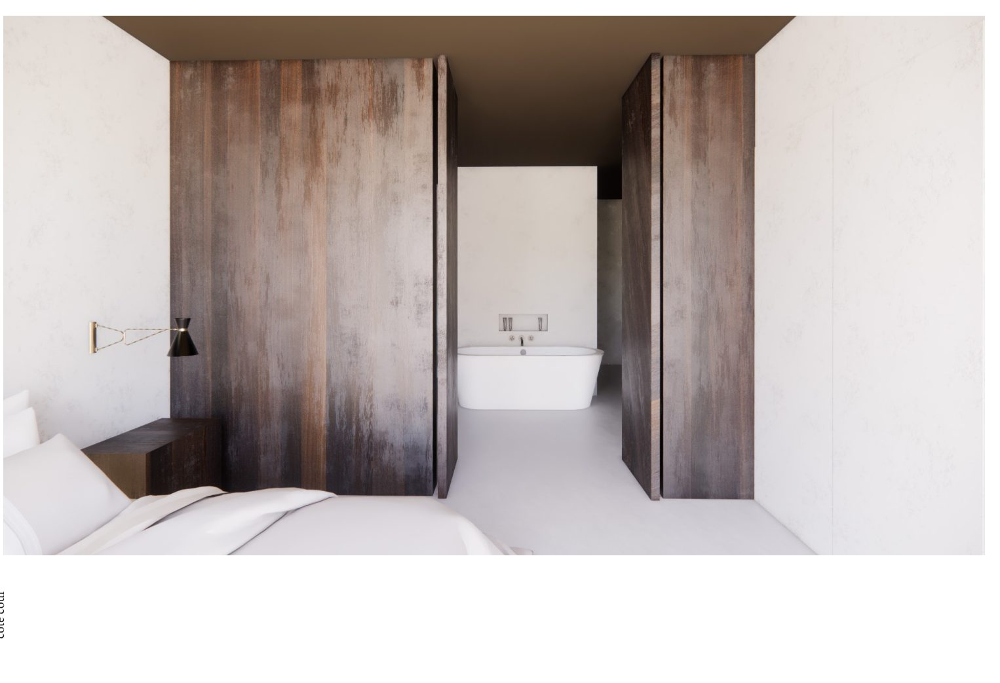
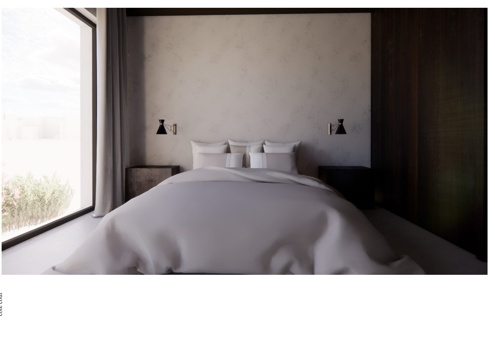
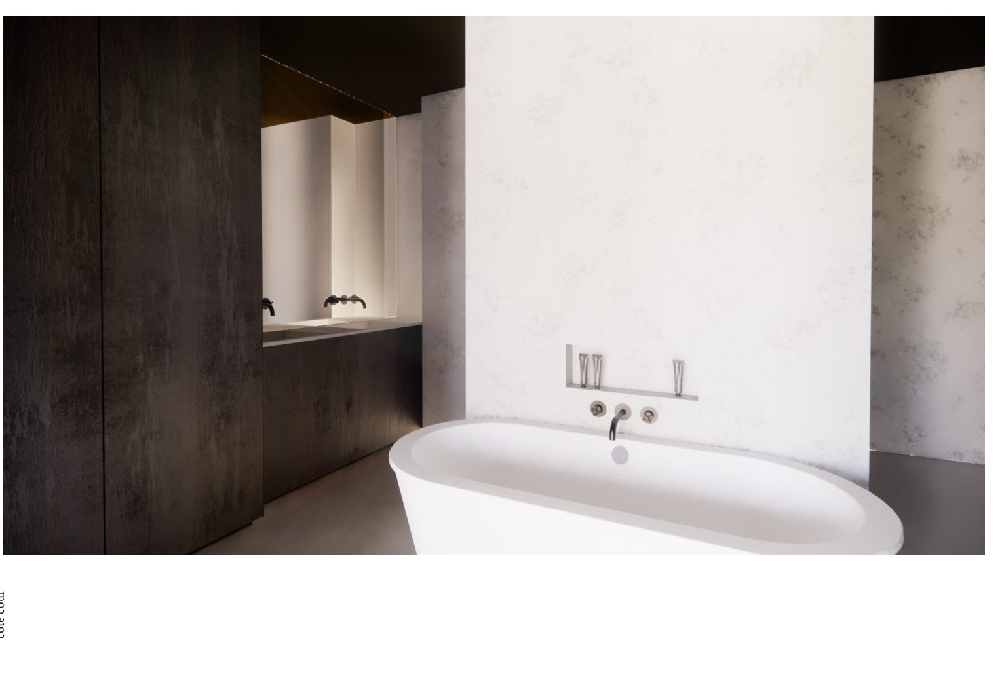

Rue Emile Wittmann 34 · En préparation
Rue Emile Wittmann 34, à Schaerbeek, Broperties prépare la transformation d'un ancien garage en quatre duplex : deux à front de rue, deux en arrière-maison, avec la réintégration d'un espace vert entre les deux bâtisses. Façade en bois côté rue, toiture verte, patio arboré et intérieurs aux tons naturels dessinés avec un studio d'architecture d'intérieur — plus d'informations prochainement.










Perspectives d'architecte — images non contractuelles.
Laissez-nous vos coordonnées — nous vous tiendrons informé de son lancement.
Nous contacter